专利制度的本质是公开换取保护，因此各国的专利管理机构都负有向公众提供专利信息的义务（绝大部分都是免费的）。所以主要国家和组织的专利管理机构官方网站都可以进行专利检索。
专利检索可以简单分为专利文本检索和专利审查过程查看两类，前者主要是对已经公开的大量专利文本进行检索，后者则是锁定一个专利，查看特定国家的审查过程（即审查意见通知书和意见陈诉）。
专利文本检索
对于专利文本检索，各国专利局都提供了本国专利文本的检索，这里列举几个主要的网站，免费噢：
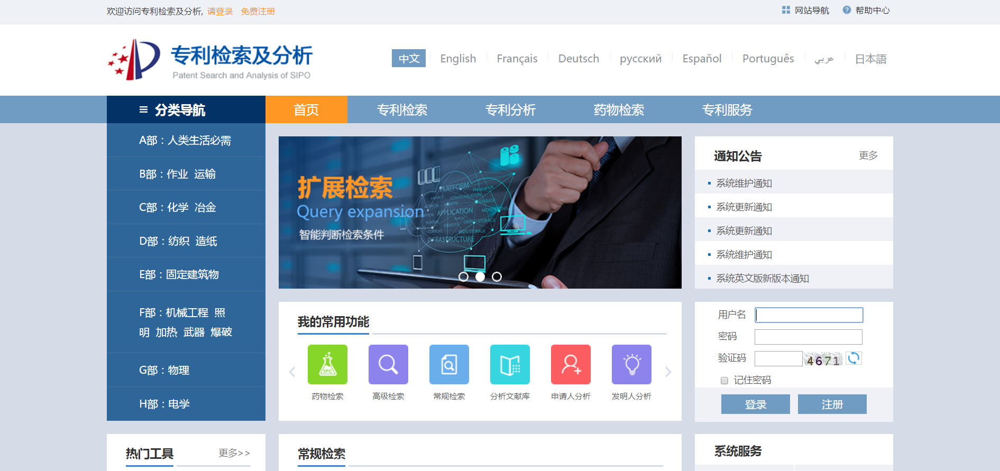
信息极全面，还提供有各种语言的对译
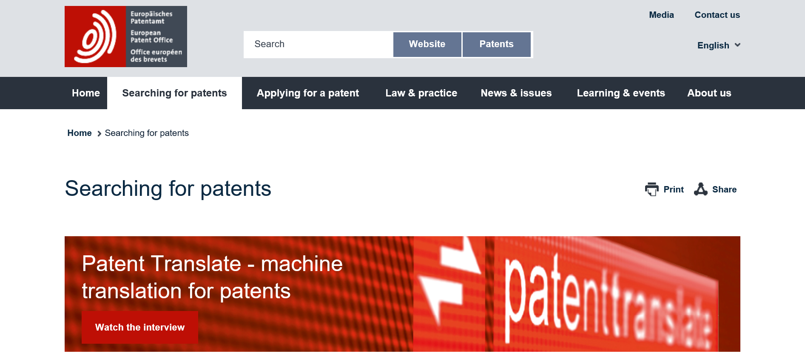
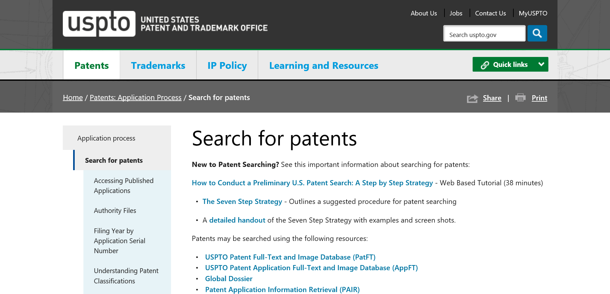
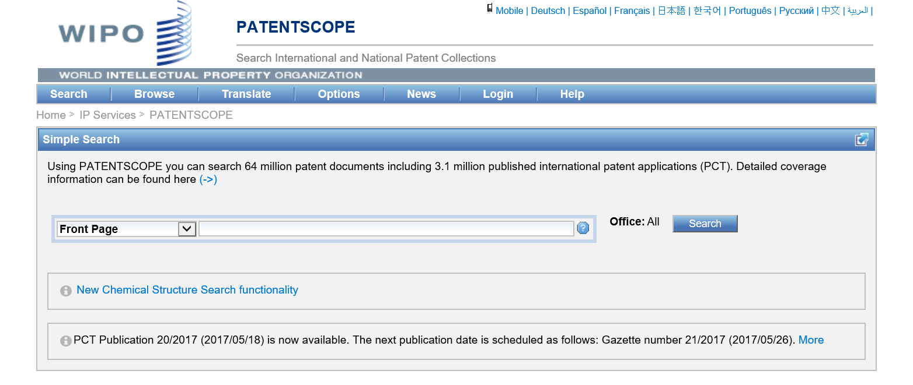
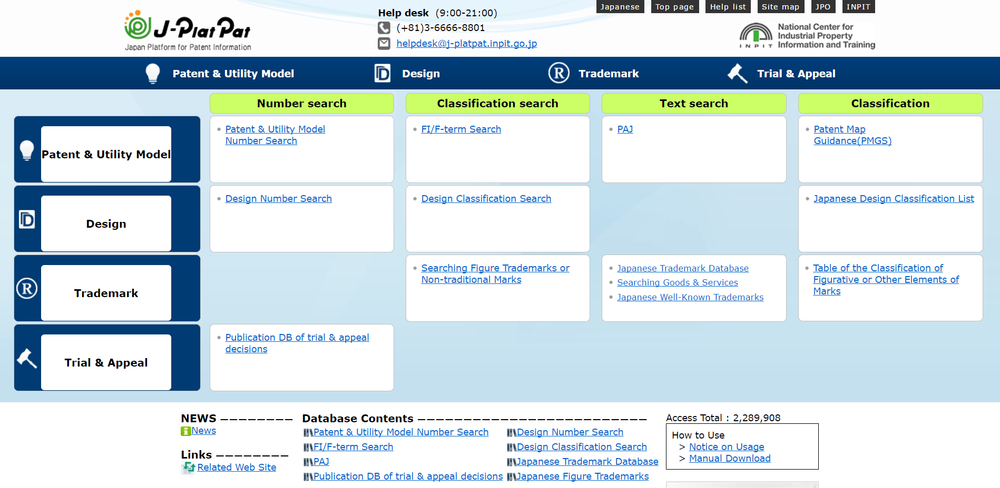
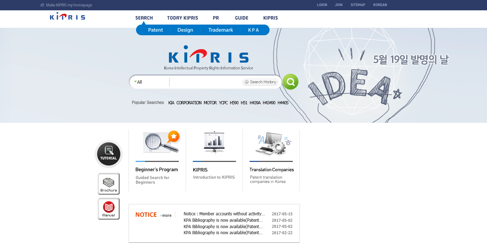
事实上，因为专利信息的公开性，所以上述很多检索系统都包含了不止本国的专利信息。比如欧专局的系统里面就包括了美国日本的大量专利信息。
而且，也有很多商业或者非商业的民间网站也提供了很全面的专利信息检索，诸如Innojoy和Soopat等。大家喜闻乐见的谷歌百度的专利检索页面也提供了很多专利信息供检索。
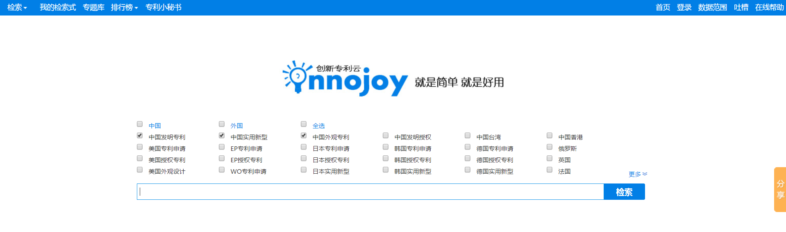
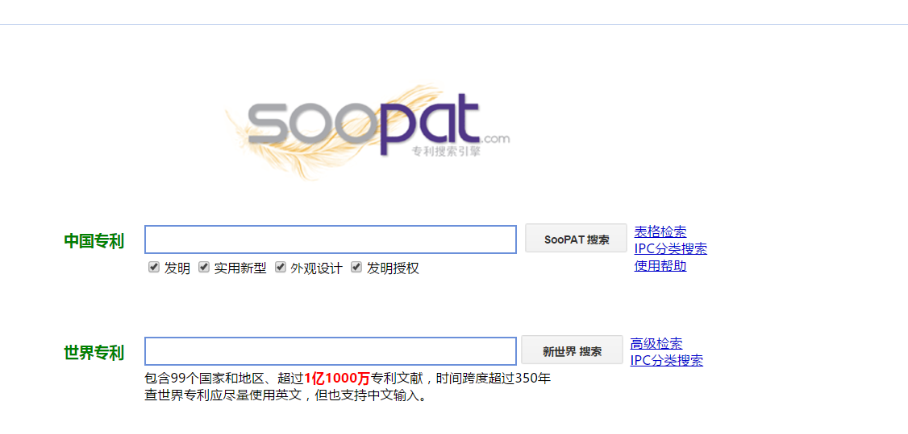
不过，这里建议可以使用国家局提供的专利检索与服务系统，这个系统是近3年新上的，是国家局内部提供给审查员使用的检索系统的公众版本，信息量很全，基本上不用访问别的数据库了（国家局最近是挺牛的了，到处和人交换数据）。
而在另一个方面，专利文本信息的质量也很重要。有些商业数据库在这方面很强大，比如大名鼎鼎的德温特，针对主要国家的专利进行二次开发，规范化表述，编成WPI数据库，这个就是要付费使用了。
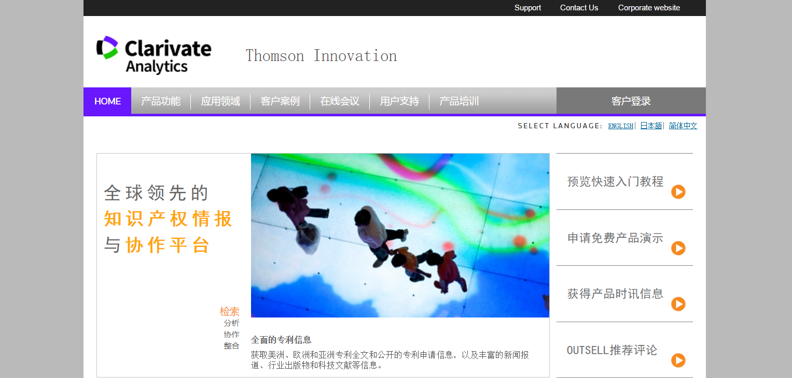
专利审查过程查看
对于此种类型的专利检索，过去只能老实地访问相应国家或者组织的网站，而且不是所有国家都公开审查过程供查看的。但是现在呢，也有了比较方便的手段。
中欧美日韩五大局，搞了一个项目Global Dossier，相互共享审查过程。因此，查询这五大局的审查过程文档又有了一个新的途径。
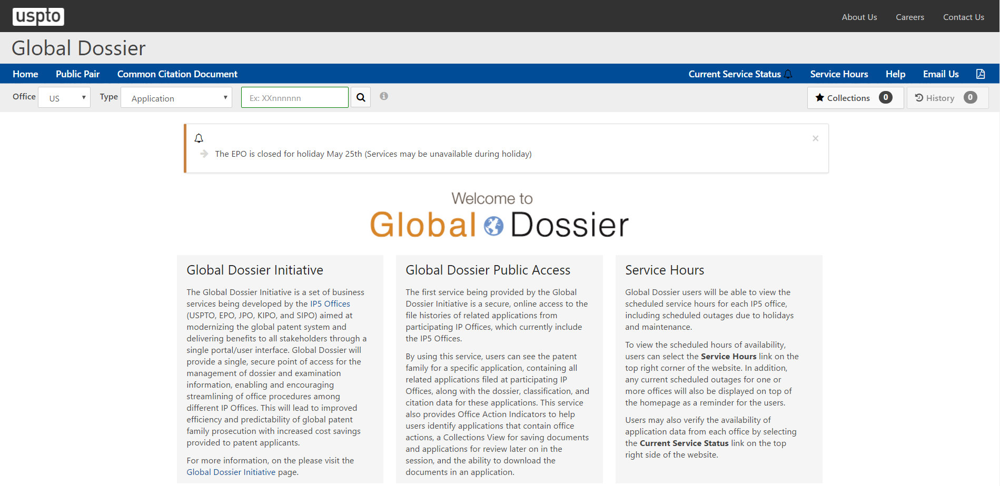
欧洲：在Espacenet页面上增加了Global Dossier的链接
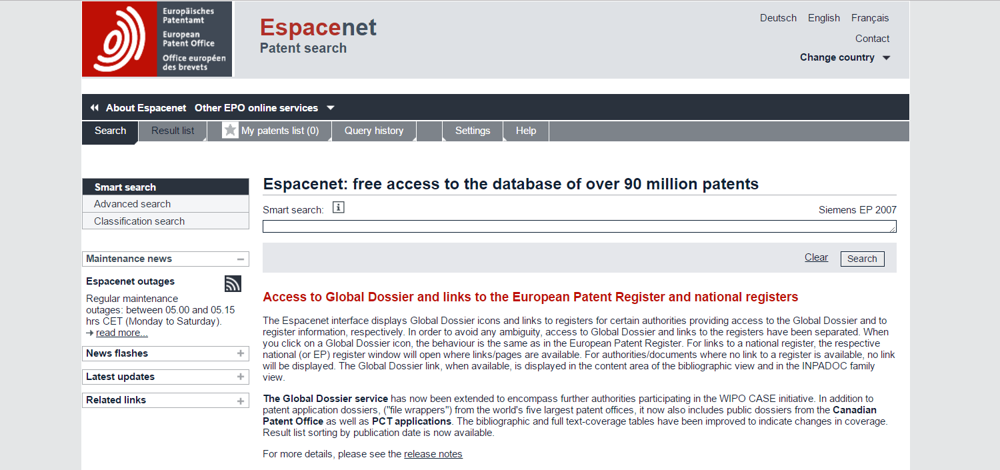
中国：
自2015年5月18日多国发明专利审查信息查询上线起，中国及多国专利审查信息查询有了进一步的更新：即自2015年6月22日起，用户可以通过输入申请号、公开号、优先权号查询到美国专利商标局的申请及审查信息。
经过各种试用，总的来看，还是美国局最厚道，信息化做的最好，至少下载的文件都规范化命名了，而且多个下载的时候很直接干脆，建议直接使用米局的Global Dossier就好啦。